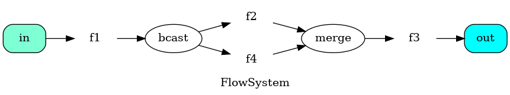
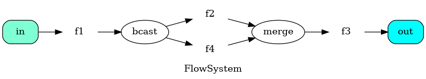

Потоковая обработка данных
План
- Введение
- задачи потоковой обработки
- отличие от пакетной обработки ("main"-style)
- трансдьюсеры (автоматы с выходом)
- сеть Петри
- Часть 1. Примеры использования
- Часть 2. Детали реализации (упрощённая модель)
- Часть 3. Граф потоков
- Домашнее задание
- чтение и обработка файла "налету" (ndjson, csv, ...)
- загрузка и скачивание файлов
- обработка аудио-потока в телефонии
- распознавание речи в поточном режиме
- поток событий (обработка, фильтрация, сохранение, передача дальше)
- веб-сервис с потоком входных запросов
- IoT
- вход/выход - потоки символов.
- Ожидания зависят от состояния. Может порождать выход спонтанно.
- конечный объём памяти (bounded)
- композиция потоковых обработчиков

- места - кружочки (там могут находиться данные)
- переходы - прямоугольники (обработка данных)
- граф - двудольный (места -> переходы -> места)
- метки - чёрные кружочки (данные)
def fib(prev: BigInt, b: BigInt): Stream[Pure, BigInt] =
Stream.emit(b) ++ fib(b, prev + b)
val fib01 = fib(0, 1)
assert(fib01.take(5).toList == List(1, 1, 2, 3, 5))
assert(fib01
.map(_ .pow(2))
.filter(_ % 2 == 1)
.take(5).toList == List(1, 1, 9, 25, 169)
)
assert(fib01.drop(55).head.toList ==
List(BigInt(225_851_433_717L))
def resourceIO(name: String): IO[InputStream] =
IO{getClass.getResourceAsStream(name)}
val largeFile: Stream[IO, Byte] =
fs2.io.readInputStream(resourceIO("large-file.txt"),
chunkSize = 4096, closeAfterUse = true)
val wordRegEx = raw"[a-zA-Z]+".r
def words: fs2.Pipe[IO, String, String] =
in => in.flatMap{ line =>
Stream.emits(wordRegEx
.findAllIn(line)
.map(_.toString)
.toList)
}
val largeFileWords = largeFile
.through(text.utf8Decode)
.through(text.lines)
.through(words)
case class Stat(charCount: Int, length: Int)
def wordStat(char: Char)(word: String): Stat =
Stat(word.count(_ == char), word.length)
def combine(a: Stat, b: Stat): Stat =
Stat(a.charCount + b.charCount, a.length + b.length)
def freq(a: Stat): Double = a.charCount * 1.0 / a.length
def freqIO(char: Char): IO[Double] =
largeFileWords
.map(wordStat(char))
.fold(Stat(0,0))(combine)
.map(freq)
.compile.toList.map(_.head)
@Test def testLetterFreq: Unit =
val freqA = freqIO('a').unsafeRunSync()
val expectedFreq = 8.5/100 //
assert(math.abs(freqA - expectedFreq) <= 0.01,
s"freqА = $freqА")
- читаем посимвольно
- переключаемся между состояниями
- накапливаем промежуточные данные
- иногда выдаём новую структуру
def mapAccumulate[S, O2](init: S)(f: (S, O) => (S, O2)): Stream[F, (S, O2)]
def parseInQuotes: Pipe[Pure, Char, String] =
in => in
.mapAccumulate[Option[List[Char]], Option[String]](None: Option[List[Char]]){
S = Option[List[Char]]
O = Char
O2 = Option[String]
init = None - находимся вне кавычек
def parseInQuotes: Pipe[Pure, Char, String] =
in => in
.mapAccumulate[Option[List[Char]], Option[String]](None: Option[List[Char]]){
case (None, '\"') => // вне кавычек, обнаружили кавычки
case (None, _) => // вне кавычек, любой символ
case (Some(lst), '\"') => // внутри кавычек, обнаружили кавычки
case (Some(lst), char) => // внутри кавычек, любой символ
}
ДЗ*: реализовать parseInQuotes с использованием Pull или другого фреймворка (akka-streams, SynapseGrid).
 

// Объявляем систему с одним входом и одним выходом.
// Везде указываем текстовые имена,
// которые будут отображаться на картинке
object FlowSystem extends BaseTypedSystem("FlowSystem"):
val in: Contact[Int] = input("in")
val out: Contact[Int] = output("out")
// строим систему, используя mutable builder.
override protected def defineSystem(implicit sb: SystemBuilder): Unit =
// два вспомогательных контакта
val bcast = contact[Int]("bcast")
val merge = contact[Int]("merge")
// функции преобразования данных
val f1, f2, f3, f4 = (i: Int) => i + 10
// соединяем контакты стрелочками и указываем,
// какое преобразование надо использовать.
(in -> bcast).map(f1, "f1")
(bcast -> merge).map(f2, "f2")
(bcast -> merge).map(f4, "f4")
(merge -> out).map(f3, "f3")
// Превращаем систему в обычную функцию
def f: Int => Iterable[Int] =
toDynamicSystem.toTransducer(in, out)
// используем построенную систему
val res = (1 to 3).flatMap(FlowSystem.f)
val flowSystem = GraphDSL.create[FlowShape[Int, Int]](){ implicit builder: GraphDSL.Builder[NotUsed] =>
// промежуточные элементы - разветвление и слияние
val bcast: UniformFanOutShape[Int, Int] = builder.add(Broadcast[Int](2))
val merge: UniformFanInShape[Int, Int] = builder.add(Merge[Int](2))
// конвертеры вход-выход
val f1, f2, f3, f4 = Flow[Int].map(_ + 10)
// добавляем к системе начальный и конечный конвертер,
// чтобы использовать их входы/выходы
val f1flow = builder.add(f1)
val f3flow = builder.add(f3)
// соединяем стрелочками все компоненты
f1flow.out ~> bcast
bcast ~> f2 ~> merge
bcast ~> f4 ~> merge
merge ~> f3flow.in
// явным образом описываем внешнюю форму системы.
FlowShape(f1flow.in, f3flow.out)
}
// используем построенную систему
val sink: Sink[Int, Future[Seq[Int]]] = Sink.seq[Int]
given ActorSystem = ActorSystem()
val g: Future[Seq[Int]] = Source(1 to 3).via(flowSystem).runWith(sink)
val res = Await.result(g, 1.second)
// Объявляем систему с одним входом и одним выходом.
def flowSystem(in: Stream[IO, Int]): Stream[IO, Int] =
// конвертеры - Pipe
val f1: Pipe[IO, Int, Int] = _.map(_ + 10)
val f2, f3, f4 = f1
// слияние делается через очередь
val mergeS = Stream.eval(Queue.unbounded[IO, Option[Int]])
mergeS.flatMap {
merge =>
f1(in)
.broadcastTo(// broadcast - без отдельного компонента.
f2.andThen(_.noneTerminate.evalMap(merge.offer).drain),// noneTerminate - чтобы передать служебный сигнал окончания потока данных сквозь очередь.
f4.andThen(_.noneTerminate.evalMap(merge.offer).drain),
)
.merge(//здесь забираем данные из очереди
Stream.repeatEval(merge.take).unNoneTerminate // ловим сигнал завершения потока (None)
)
.through(f3)
}
// используем построенную систему
val res = Stream(1,2,3).through(flowSystem).compile.toList.unsafeRunSync()
Внутреннее устройство FS2
fs2.io- внешний DSL формирует FST - конечный автомат с выходом
- этап конструирования (blueprint) отделён от этапа исполнения
- Pull/Chunk - основной DSL внутреннего механизма
- "алгебра" - набор атомарных команд, исполняемый интерпретатором fs2
"Алгебры": лирическое отступление
- погружение обычных величин в "алгебру" F[T]
- комбинирование средствами алгебры (map, flatMap, merge, etc.)
- возврат из алгебры в обычное пространство
"Алгебры": IO
- IO[T] - вычисление, возвращающее величину T (или исключение)
- комбинаторы позволяют сконструировать будущее вычисление
- io.unsafeRunSync() - фактически запустить вычисление
- преимущество - сохранение чистоты функций до последнего момента
"Алгебры": Stream
- Stream[IO, T] - абстрактный поток значений типа T, который может быть превращён в вычисление IO[List/Seq/Vector/...[T]]
- комбинаторы позволяют сконструировать течение значений и их обработку
- stream.compile.toVector - сформировать вычисление IO[Vector[T]]
- преимущество - удобные комбинаторы, позволяющие конструировать сложные алгоритмы обработки
Пример take(n)
Пример асинхронной обработки через очередь
FS2: merge
- расщепление потоков для разных параллельных задач
- как выполняется слияние?
- потоки запускаются независимо и результат - в очередь
Вариант 1. wc, grep
- Текст больше, чем размер памяти JVM
- Linux-команда wc - подсчитывает строки/слова/символы. Читает из std.in.
- Linux-команда grep - фильтрует строки, удовлетворяющие регулярному выражению.
Вариант 1*. Вариация wc
- средняя длина слова;
- количество артиклей a, the;
- доля слов, начинающихся с заглавной буквы;
- количество заметок в скобках (вложенные скобки не считать);
- нарисовать картинку, описывающую структуру системы
Вариант 2*. Управление потоком
- Сделать один поток - генерацию текущих моментов времени через каждую секунду.(`.metered`)
- Сделать второй поток - чтения команд с консоли (on/off).
- Объединить эти потоки таким образом, что управляющий поток включает и выключает прохождение сигналов времени
- Результирующий поток вывести в консоль в формате времени чч:мм:сс
Вариант 3**. Реализовать бота для приложения чата
https://github.com/typelevel/fs2-chat/- Fork-нуть пример
- Кроме клиента/сервера, реализовать бота, который будет подключаться к серверу, слушать поток сообщений и при упоминании имени бота (например, Вася), выдавать сообщение.
Спасибо за внимание
Вопросы?
Арсений Александрович Жижелев, Праймтолк / zhizhelev@primetalk.ru